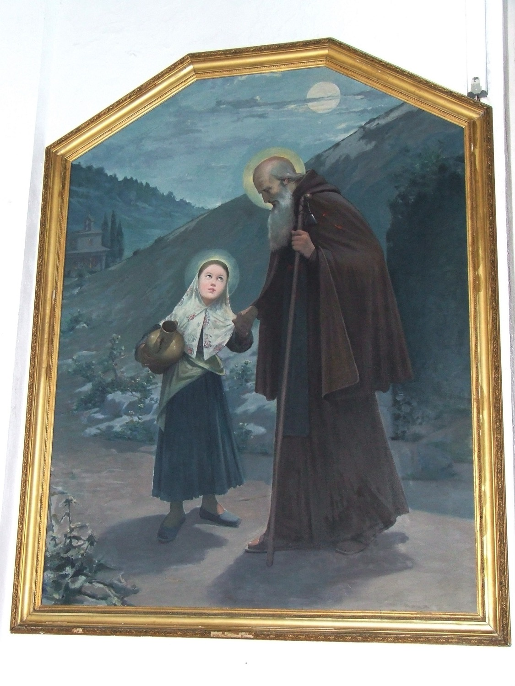

Santa Catalina Tomàs (1531–1574), coneguda popularment a Mallorca com sor Tomasseta o la Beata, és l’única santa nascuda a Mallorca. Va ser una monja canongesa agustina, famosa en vida per la seva saviesa i prudència, pels seus dons profètics, per les seves bregues amb el dimoni i pels seus èxtasis místics, que de vegades arribaren a durar 24 hores. El seu cos incorrupte està exposat al convent de Santa Magdalena de Palma.
Aquesta pintura fa referència a la tradició segons la qual sant Antoni Abat se li aparegué un vespre quan era nina i havia anat a la font a cercar aigua, i l’acompanyà fins a casa seva. Santa Catalina hi apareix vestida de pageseta, amb una gerra d’aigua, i sant Antoni amb barba llarga, vestit de monjo i amb un gaiato d’ermità amb una campaneta, que representa la seva relació amb els Canonges regulars de sant Antoni, que identificaven amb campanetes els porcs que criaven per obtenir el greix amb què curaven el “foc de sant Antoni”.